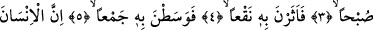
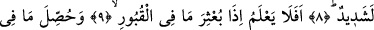
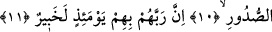

İNSAN,
RABBİNE KARŞI
PEK NANKÖRDÜR
Bismillâhirrahmânirrahîm
1. Harıl harıl koşanlara,
2. (Nallarıyla) çakarak kıvılcım saçanlara,
3. (Ansızın) sabah baskını yapanlara,
4. Orada tozu dumana katanlara,
5. Derken orada bir topluluğun ta ortasına girenlere yemin ederim ki
6. İnsan, Rabbine karşı pek nankördür.
7. Şüphesiz buna kendisi de şâhiddir
8. Ve o, mal sevgisine de aşırı derecede düşkündür.
9. Kabirlerde bulunanlar diriltilip dışarı atıldığı
10. Ve kalplerde gizlenenler ortaya konduğu zaman insan (hâlinin ne olacağını)
düşünmez mi?
11. Şüphesiz Rableri o gün onlardan tamamıyla haberdardır.
“Âdiyât”, süratle koşanlar, demektir. Allah Teâlâ burada, düşmana doğru koşan
gâzîlerin atları üzerine yemin etmektedir.
Âyetteki “dabhan” kelimesinin mânâsı, atın koşarken hızlı hızlı alıp-verdiği
nefeslerin sesidir. Yâni koşarken atların ağız ve karınlarından işitilen sestir. Bu ses, atın
kişneme ve arpa yerken çıkardığı hırıltıdan farklıdır.